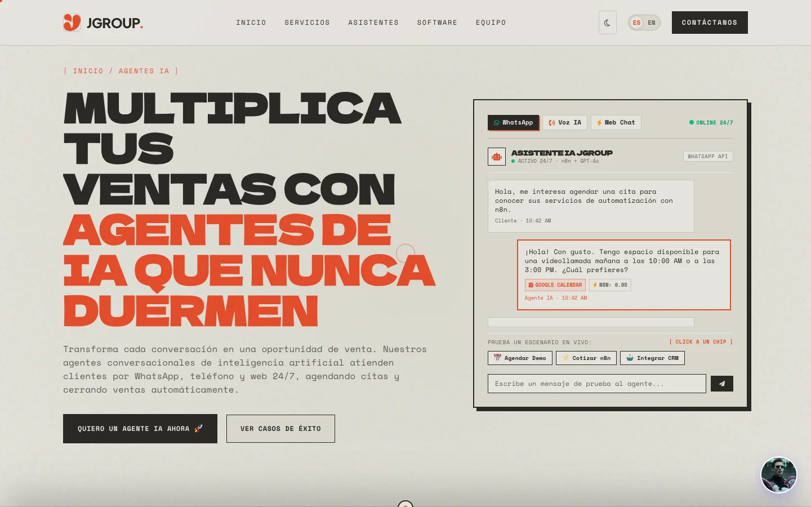
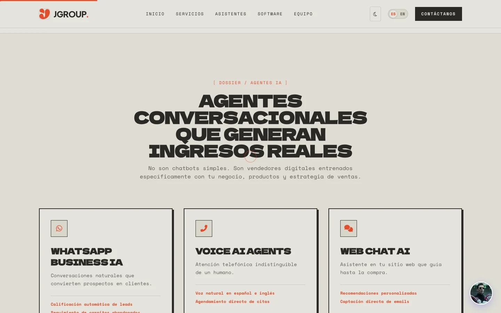
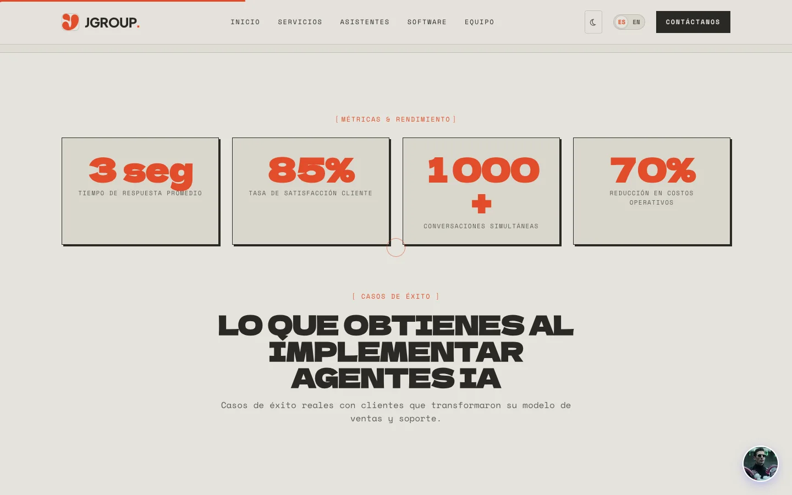
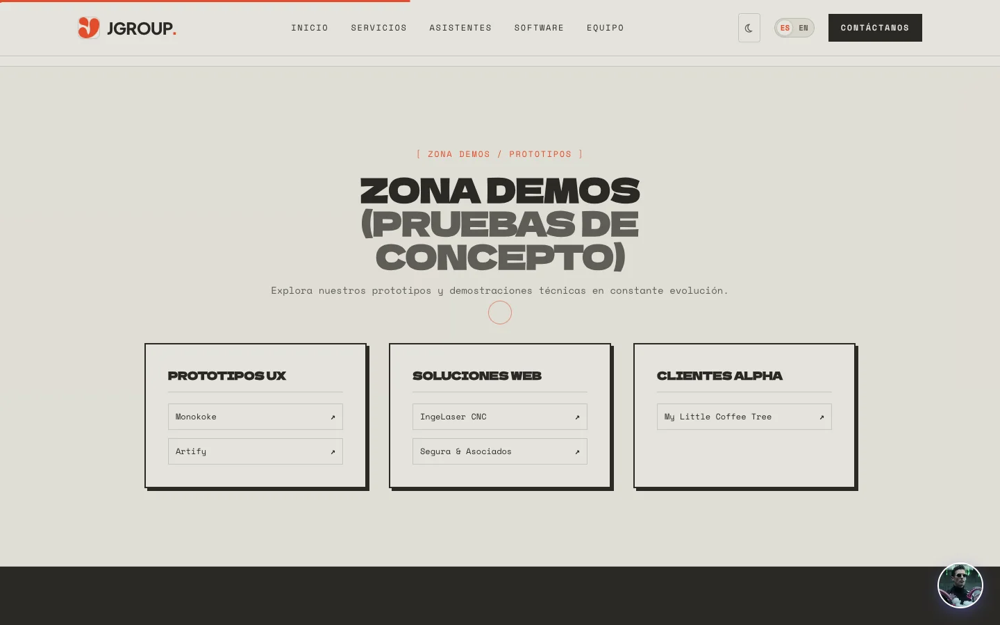
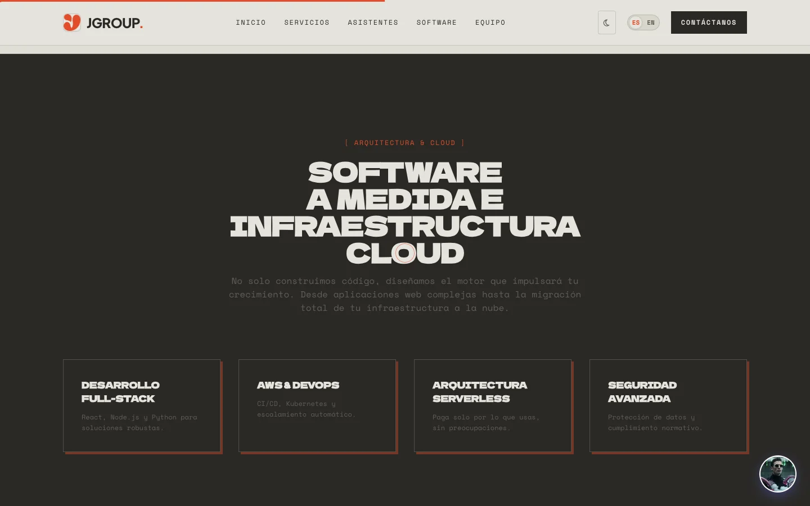
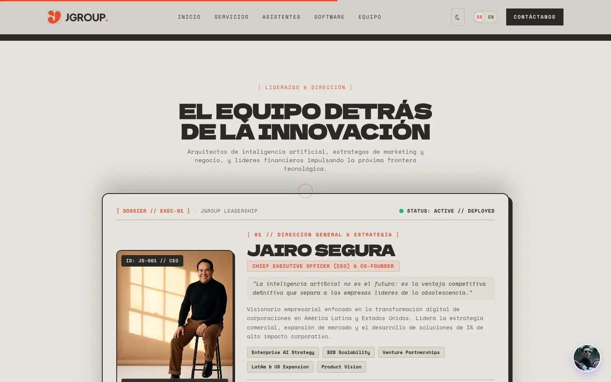
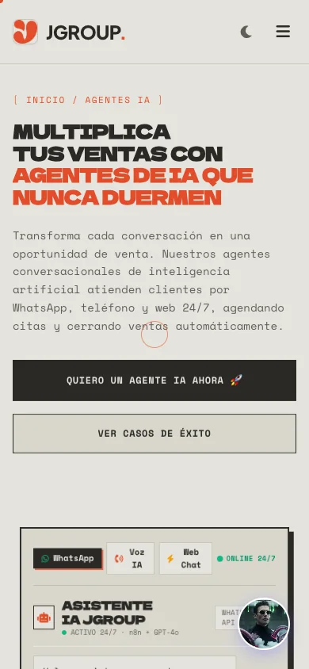

CMO · Web Design · UX/UI
JGroup TechAI agents that sell 24/7

JGroup Tech is an AI agency in Bogotá that builds agents for WhatsApp, voice and web chat, automates processes with n8n and OpenAI, and runs the cloud behind them for companies across Latin America.
My role
As Chief Marketing Officer I lead brand strategy, positioning, acquisition campaigns and conversion funnels, and I shaped the website that takes JGroup's AI solutions to market.
“La tecnología no se vende sola: se vende cuando el cliente entiende en segundos qué problema le resuelve.”
Wolfgang Betancourth, CMO
Show, don't tell
The hero is the product: a working agent console with WhatsApp, voice and web-chat tabs, scripted conversations, live latency badges and chips that let visitors trigger a scenario themselves.
Below it, services, agent types, metrics and success cases are laid out as an editorial dossier, so a non-technical buyer understands the value in seconds.

Proof and conversion
Proof and conversion
Big-number metrics, real success cases and a demo zone with UX prototypes, client websites and alpha projects move the visitor from curiosity to contact, with WhatsApp and a voice widget always one tap away.




Design system
Dela Gothic One headlines, Space Mono for body and labels and Plus Jakarta Sans for UI, on warm paper with a signal-orange accent, hard offset shadows and bracketed section labels.
A custom cursor, scroll progress bar, page loader, dark mode and a Spanish/English switch complete the experience, all responsive down to mobile.

Next prøject
TradeDevi.AI →